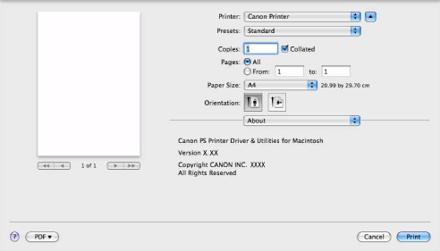

>
Contents
>
Panes and Dialog boxes
>
[About] preferences pane
[About] preferences pane
This pane displays version information about the printer driver.
NOTE
In Mac OS X version 10.5 and later, depending on the application, the settings in each preferences pane are displayed at the bottom.
